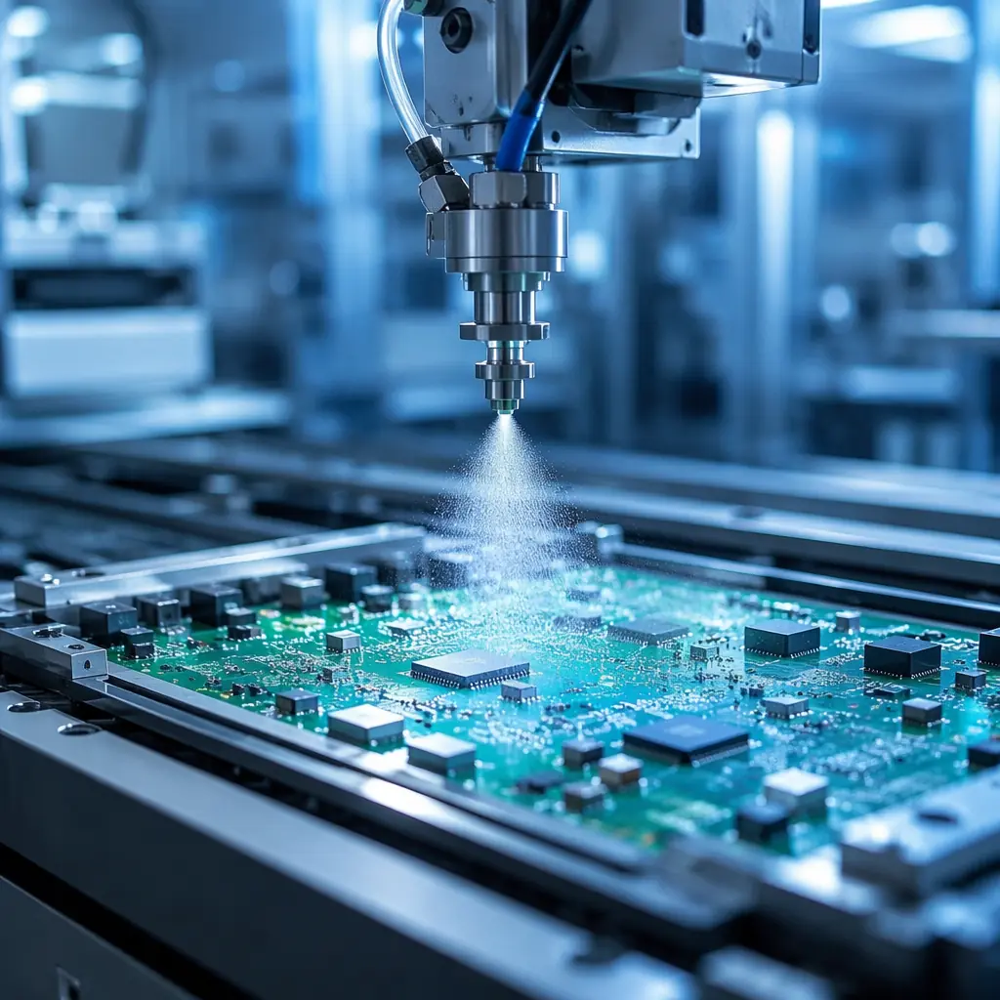
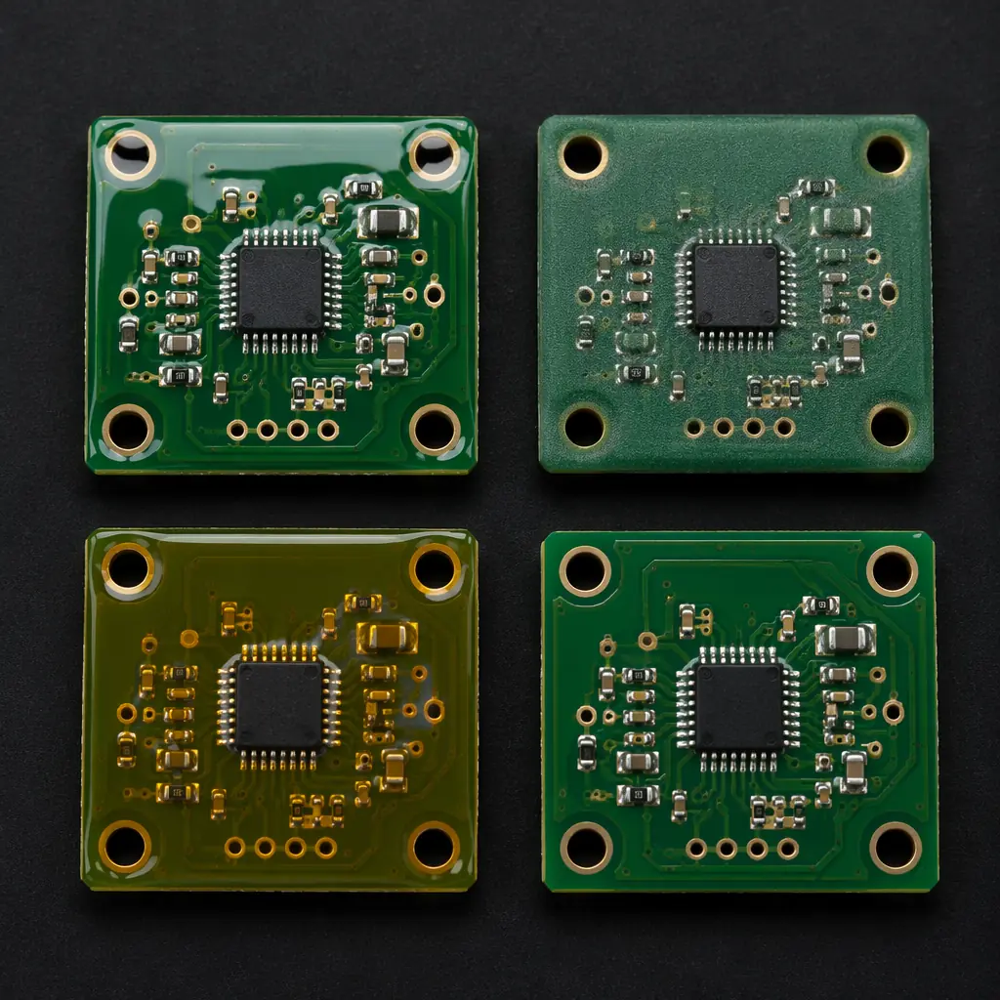
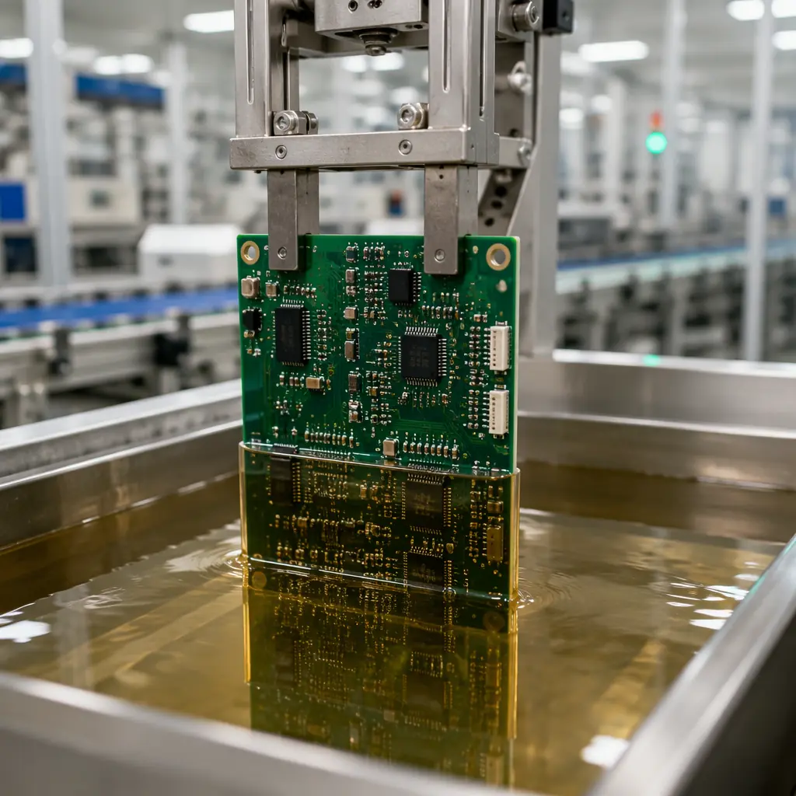
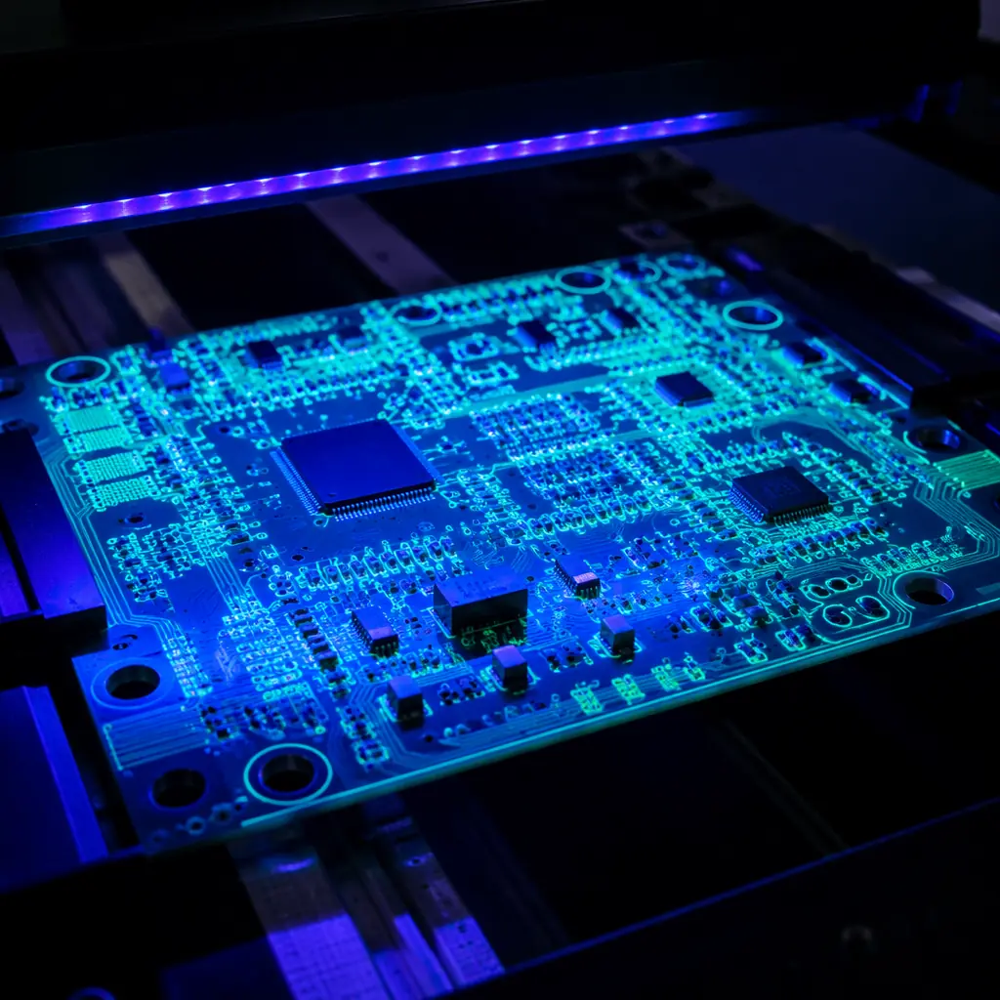

When a PCB operates in a humid factory floor, under the hood of a vehicle, or inside an outdoor telecom enclosure, bare copper traces and exposed solder joints become failure points. Moisture causes dendrite growth and electrochemical migration. Salt spray corrodes connectors. Condensation shorts adjacent pads. Conformal coating — a thin polymeric film applied to the PCB surface — creates a barrier that prevents these failure modes without adding significant weight or volume. For procurement managers sourcing boards destined for harsh environments, specifying the right coating material and application method is not optional: it determines whether the product survives its warranty period.
At Huaxing PCBA, conformal coating is a standard step in our production flow for automotive, industrial, medical, and aerospace assemblies. Our facility handles 8 SMT lines with integrated selective coating systems and automated UV inspection, processing over 8 million placements per day. This guide draws on that production experience to give you the technical details needed to make informed coating decisions — from material chemistry to IPC compliance.

What Is PCB Conformal Coating — and When Do You Actually Need It?
Conformal coating is a thin protective layer — typically 25–250 microns thick — that conforms to the contours of the PCB and its components. Unlike potting (which fully encapsulates the board in a solid block), conformal coating adds negligible weight and allows rework access. Its primary functions are:
Moisture and Humidity Barrier
Prevents water absorption that causes leakage currents between adjacent conductors. Critical for outdoor enclosures, marine electronics, and any board exposed to condensation cycles. Uncoated FR-4 absorbs up to 0.15% moisture by weight, which is enough to drop surface insulation resistance (SIR) below 100 MΩ — a threshold where signal integrity degrades measurably.
Chemical and Corrosion Resistance
Protects against salt spray, sulfur compounds, flux residues, and industrial atmospheres. Automotive ECUs mounted in the engine bay face continuous exposure to oil mist, fuel vapor, and road salt — uncoated boards in these environments typically fail within 12–18 months. Coated assemblies in the same conditions routinely exceed 10-year service life. For industrial control environments, see our industrial control PCB manufacturing guide.
Dust and Particulate Protection
Prevents conductive dust, metal shavings, and carbon particles from bridging adjacent pins on high-density SMT boards. Fine-pitch QFP and BGA packages with 0.4mm lead spacing are especially vulnerable — a single metal particle can short an entire bus. For BGA-specific protection requirements, refer to our BGA assembly guide.
Thermal and Mechanical Shock Mitigation
Absorbs CTE mismatch stress between components and substrate during thermal cycling. Boards going from -40°C cold-start to +125°C operating temperature in under 60 seconds — typical in aerospace and under-hood automotive — experience solder joint fatigue that coating can slow by 3× to 5×. Read our aerospace & defense PCB guide for extreme-environment qualification requirements.
Decision Rule: If your board operates in any environment where relative humidity exceeds 60% for more than 100 hours per year, or where corrosive gases (H₂S, SO₂, Cl₂) are present above 10 ppb, conformal coating is not optional — it is a reliability requirement. IPC-HDBK-830 provides quantitative environmental thresholds for common application scenarios.
Conformal Coating Material Types: Chemistry, Strengths, and Tradeoffs
Five coating chemistries dominate industrial PCB protection. Each has distinct physical properties, application methods, and cost profiles. Choosing wrong can be expensive: we have seen production batches rejected because silicone coating was specified for a connector surface where rework required mechanical abrasion instead of solvent removal, adding 40% to rework cost. The table below summarizes the decision factors; detailed chemistry guidance follows.
| Property | Acrylic (AR) | Silicone (SR) | Urethane (UR) | Epoxy (ER) | Parylene (XY) |
|---|---|---|---|---|---|
| Dielectric Strength | 18–22 kV/mm | 15–20 kV/mm | 25–30 kV/mm | 16–20 kV/mm | 220 kV/mm |
| Temperature Range | -65 to +125°C | -65 to +200°C | -55 to +125°C | -55 to +150°C | -200 to +150°C |
| Reworkability | Easy (solvent) | Difficult | Difficult (heat) | Very Difficult | Impossible (mechanical) |
| Moisture Barrier | Good | Fair | Excellent | Excellent | Superior |
| Chemical Resistance | Moderate | Good | Excellent | Excellent | Superior |
| Thickness (typical) | 25–75 μm | 50–200 μm | 25–75 μm | 50–150 μm | 5–25 μm |
| Relative Cost | $ (low) | $$ (medium) | $$ (medium) | $$ (medium) | $$$$ (very high) |
| Best For | General purpose, indoor | High-temp, flexible | Chemical, abrasion-prone | Permanent, high-barrier | Medical implant, MIL-SPEC |

Acrylic (AR) — The Workhorse Coating
Solvent-based acrylics are the most widely used conformal coating type, accounting for roughly 50% of all industrial PCB coating applications. They dry in 10–30 minutes at room temperature through solvent evaporation — no curing oven required. Key advantage: easy chemical removal with acetone or proprietary stripper, making rework and repair straightforward. This is important for prototype and low-volume production where field returns may need component replacement. The main limitation is moderate solvent resistance — acrylic softens when exposed to ketones, esters, and aromatic hydrocarbons, making it unsuitable for fuel system electronics or chemical plant instrumentation.
Silicone (SR) — High Temperature and Flexibility
Silicone coatings maintain elasticity from -65°C to +200°C, making them the default choice for under-hood automotive electronics, downhole drilling instruments, and any board subject to wide thermal swings. The low modulus of silicone (typically 3–10 MPa vs 500–2000 MPa for epoxy) absorbs CTE mismatch stress rather than transmitting it to solder joints. Tradeoff: silicone is permeable to moisture vapor — its MVTR (moisture vapor transmission rate) is 5–10× higher than urethane — so it is not the best choice for continuous immersion applications. Silicone also requires mechanical or plasma removal for rework; solvents do not dissolve cured silicone effectively.
Urethane (UR) — Chemical and Abrasion Resistance
Two-part polyurethane coatings cure through a chemical crosslinking reaction, forming a hard, chemically resistant film. Urethane is the standard for fuel system PCBs, chemical processing instrumentation, and boards exposed to hydraulic fluid or aggressive cleaning agents. Its abrasion resistance is 3–5× higher than acrylic, making it suitable for assemblies that may be handled during installation or maintenance. The downside: urethane is difficult to remove for rework — typically requiring localized heating to 150–200°C with a hot-air tool — and the two-part mixing process demands precise ratio control to avoid incomplete cure.
Epoxy (ER) — Permanent High-Barrier Protection
Two-part epoxy coatings provide the most durable barrier among liquid-applied materials. Once cured, epoxy resists virtually all common solvents, acids, and bases. Applications include downhole oil & gas instrumentation, marine sonar electronics, and military avionics where the board may never be reworked. Epoxy's brittleness is the main drawback — it can crack under repeated thermal cycling unless the substrate CTE is well-matched. Rework is essentially impossible without board damage, so epoxy is only specified when the design is fully validated and field repair is not expected.
Parylene (XY) — The Gold Standard for Extreme Environments
Parylene is not a liquid — it is deposited as a gas in a vacuum chamber through a process called chemical vapor deposition (CVD). The result is a truly conformal, pinhole-free coating as thin as 5 microns that penetrates under components and into gaps smaller than 1 micron. Parylene Type C has the highest dielectric strength (220 kV/mm) of any conformal coating and passes the strictest MIL-I-46058C and IPC-CC-830B requirements. Applications include Class III medical implants (ISO 13485), space-grade electronics, and military systems where failure is not an option. Cost is 10–20× higher than acrylic per board — the vacuum deposition process is batch-based and cycle times run 8–24 hours. For medical device requirements, see our medical device PCB manufacturing guide.
Procurement Tip: When comparing coating quotes, verify the thickness specification. A "conformal coated" quote at $0.15/board using 15 μm acrylic is not equivalent to a $1.80/board quote using 25 μm parylene. IPC-CC-830 specifies minimum thickness by material class — always ask for the coating type AND target thickness in the same RFQ line item.
Application Methods: How the Coating Gets Onto Your Board
Coating application method affects uniformity, edge coverage, component shadowing, and per-board cost. The four primary methods span from manual low-volume to fully automated high-speed production.

Manual Brush Application — Low Volume, High Operator Dependency
Coating is applied by hand with a brush or aerosol can. Suitable for prototypes, one-off repairs, and boards with fewer than 50 units per batch. The main problem is consistency: brush strokes leave thickness variations of ±50%, and operators invariably miss the underside of tall components. Manual application does not meet IPC-CC-830 qualification requirements for production volumes above 100 units. Cost per board: $0.30–$0.80 in labor at Shenzhen rates.
Automated Spray Coating — Medium to High Volume
A reciprocating spray head moves over the board on an X-Y gantry, applying atomized coating through a nozzle. Programmable spray patterns allow selective coating — connectors, test points, and RF shields are masked or skipped. Modern systems use needle-valve nozzles as fine as 0.2mm diameter for precise edge definition. Throughput: 200–600 boards per hour depending on board size. This is the method used in our PCB assembly line for automotive and industrial volumes. Cost per board: $0.05–$0.25 at production scale, plus NRE for programming and masking fixtures (~$200–800 one-time).
Dip Coating — High Throughput, Full Immersion
The entire board is immersed in a coating bath, withdrawn at a controlled speed (typically 5–30 cm/min), and drained. Dip coating achieves the most uniform thickness across the board surface but coats everything — connectors, edge contacts, and test pads must be masked with removable tape or boots before dipping. Best suited for high-volume production of simple boards without many keep-out zones. Throughput: 500–1,200 boards per hour. Common for consumer electronics and cost-sensitive automotive modules.
Selective Coating — Precision for Complex Boards
A programmable 3-axis or 4-axis robot positions a non-atomizing dispensing valve with ±0.1mm accuracy, applying coating only where programmed. This eliminates the masking step entirely for most designs — the robot simply does not dispense over keep-out zones. Modern selective coating systems run at 300–500 mm/sec with flow rates adjustable from 0.01 to 0.5 mL/sec. Ideal for high-density boards with connectors, BGA packages, and tall capacitors that require precise exclusion areas. At Huaxing, selective coating is the default method for any board with more than 5 keep-out zones — the elimination of masking labor typically recovers the NRE cost within the first 1,000 boards.
IPC Standards and Quality Inspection for Conformal Coating
Conformal coating quality is governed by IPC-CC-830 (qualification and conformance) and IPC-HDBK-830 (design and application guide). These standards define the test methods, acceptance criteria, and inspection protocols that separate a reliable coated assembly from one that will fail in the field. For a broader overview of PCB quality standards, see our PCB certifications and compliance guide.

| IPC-CC-830 Test | What It Measures | Pass Criteria | Why It Matters |
|---|---|---|---|
| Dielectric Withstand Voltage | Insulation breakdown point | >1,500V at specified thickness | Prevents arc-over on high-voltage boards |
| Moisture & Insulation Resistance | SIR after 7 days at 85°C/85% RH with 50V bias | >100 MΩ (Class 3: >500 MΩ) | Predicts field life in humid environments |
| Thermal Shock | Adhesion after 50 cycles -65°C to +125°C | No cracking, delamination, or lifting | Screens for CTE mismatch failure |
| Flammability | UL 94 rating at specified thickness | V-0 or V-1 | Required for UL-listed end products |
| Fungus Resistance | 28-day fungal growth test | No growth on coating surface | Required for tropical/military deployment |
Inspection Methods: Verifying Coating Quality
UV Light Inspection — Fast Pass/Fail Screening
Most conformal coatings incorporate a UV fluorescent tracer. Under 365nm UV-A light, coated areas glow bright blue or green while uncoated areas remain dark. This enables 100% visual inspection at line speed — operators or automated cameras detect coverage gaps, bubbles, and thin spots in under 2 seconds per board. UV inspection catches approximately 95% of coating defects, making it the most cost-effective first-pass inspection method. At Huaxing, every coated board passes under automated UV cameras with AI-based defect classification.
Wet Film Thickness Gauge — Direct Measurement
A comb-style gauge with graduated teeth is pressed into the wet coating immediately after application. The tooth that makes contact with the liquid indicates the wet film thickness. Dry film thickness is calculated by multiplying wet thickness by the coating's solids content ratio (typically 20–35% for solvent-based acrylics). This is the standard method for process qualification and periodic sampling — typically 5 boards per 500 for production runs. For more on testing and inspection methods, see our PCB testing methods comparison.
Automated Optical Inspection (AOI) with Coating Module
High-resolution cameras with multi-spectral illumination (UV + visible + IR) map coating coverage at micron resolution. The system compares the captured image against the programmed keep-out and keep-in zones from the PCB CAD data, flagging any deviation beyond the allowed tolerance — typically ±0.5mm for commercial and ±0.25mm for Class 3. Modern systems process a 200×300mm board in approximately 8–12 seconds.
Cost Factors in Conformal Coating: What Drives the Price Per Board
Conformal coating cost varies over a 50× range depending on material, method, and volume. Understanding the cost drivers helps procurement teams budget accurately and avoid surprises when comparing quotes from different suppliers. For a comprehensive overview of PCB cost factors, see our PCB manufacturing cost drivers guide.
| Cost Driver | Low End | High End | Impact |
|---|---|---|---|
| Material chemistry | Acrylic ($0.02/board) | Parylene C ($1.50–3.00/board) | 75× range |
| Application method | Dip (lowest labor) | Manual brush (highest labor) | 3–5× at scale |
| Keep-out zones | 0–3 zones (simple) | 20+ zones with tight tolerances | 2–4× NRE + 20–40% per-unit |
| Volume | 100 boards (prototype) | 50,000+ boards (production) | 5–10× per-board |
| Inspection level | UV visual only | AOI + thickness + SIR per lot | $0.02–$0.30/board |
Real Factory Data: At Huaxing, a typical 4-layer automotive ECU board (150×100mm, 8 keep-out zones, acrylic, selective coating, 10,000 unit order) runs approximately $0.18–$0.25 per board for coating — all-in with UV inspection. The same board with silicone for under-hood deployment runs $0.35–$0.50. Parylene on the same board would be $1.80–$2.50 per board due to the vacuum deposition batch cost.
Summary: Making the Right Coating Decision
Conformal coating is not a one-size-fits-all specification. The material, method, thickness, and inspection level must be matched to the end-use environment, reliability requirements, and production volume. Getting the specification right during NPI avoids the costliest outcome: field failures that trigger recalls, warranty claims, and loss of customer confidence.
At Huaxing PCBA, conformal coating is integrated into our full-service manufacturing flow — from DFM review through PCB fabrication, SMT assembly, selective coating, UV inspection, and turnkey box-build. Our 8 SMT lines handle coating for automotive, medical, industrial, and aerospace assemblies with IPC-CC-830 compliance across all five material types. We offer free DFM review including coating coverage analysis — send your Gerber and BOM to receive a coating recommendation and production quote within 24 hours. Learn how to audit a PCB supplier or contact our engineering team to discuss your specific coating requirements.